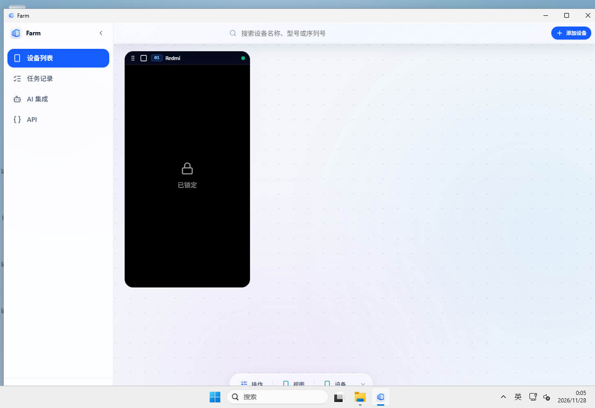
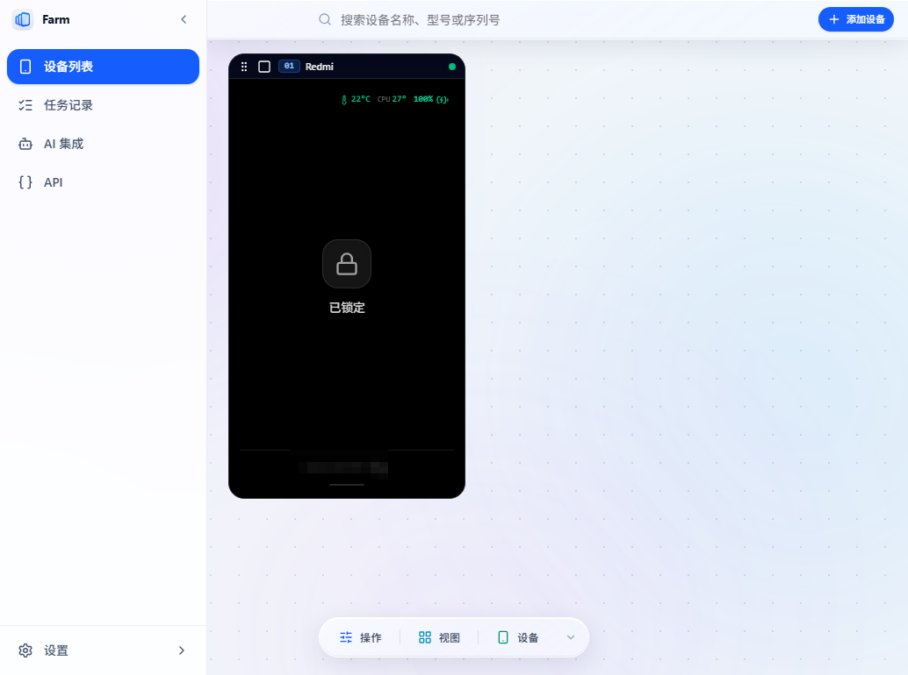
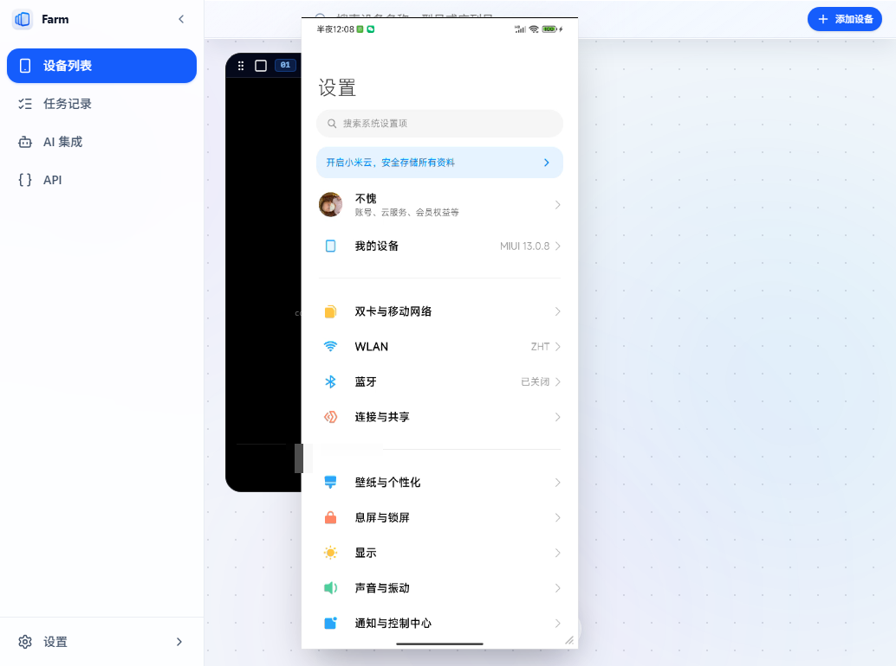
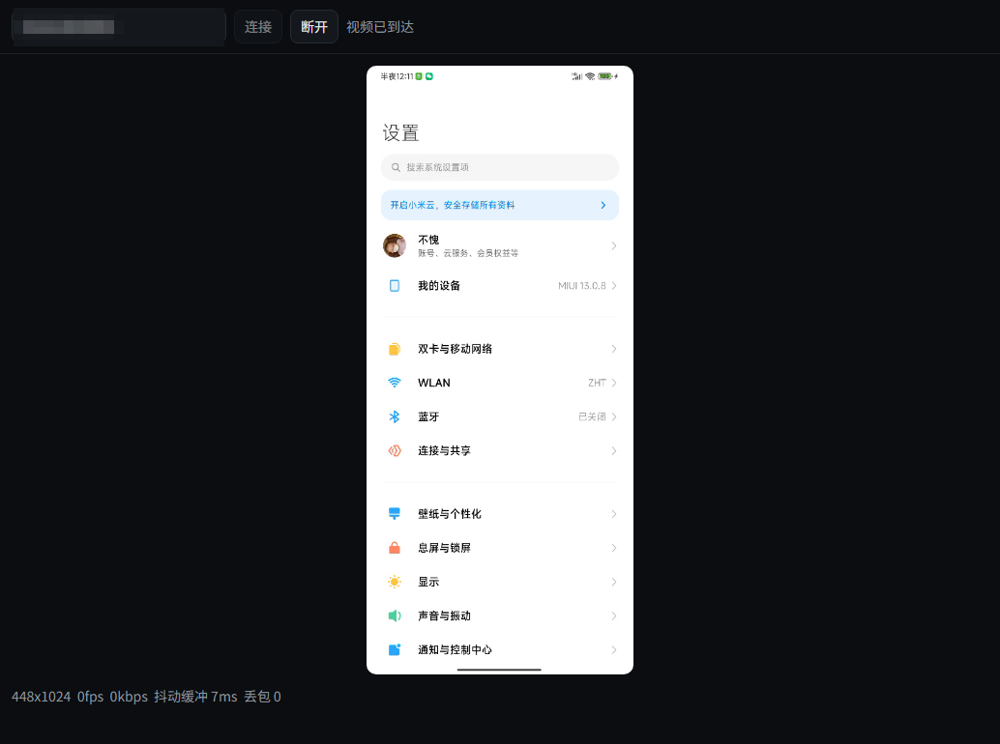
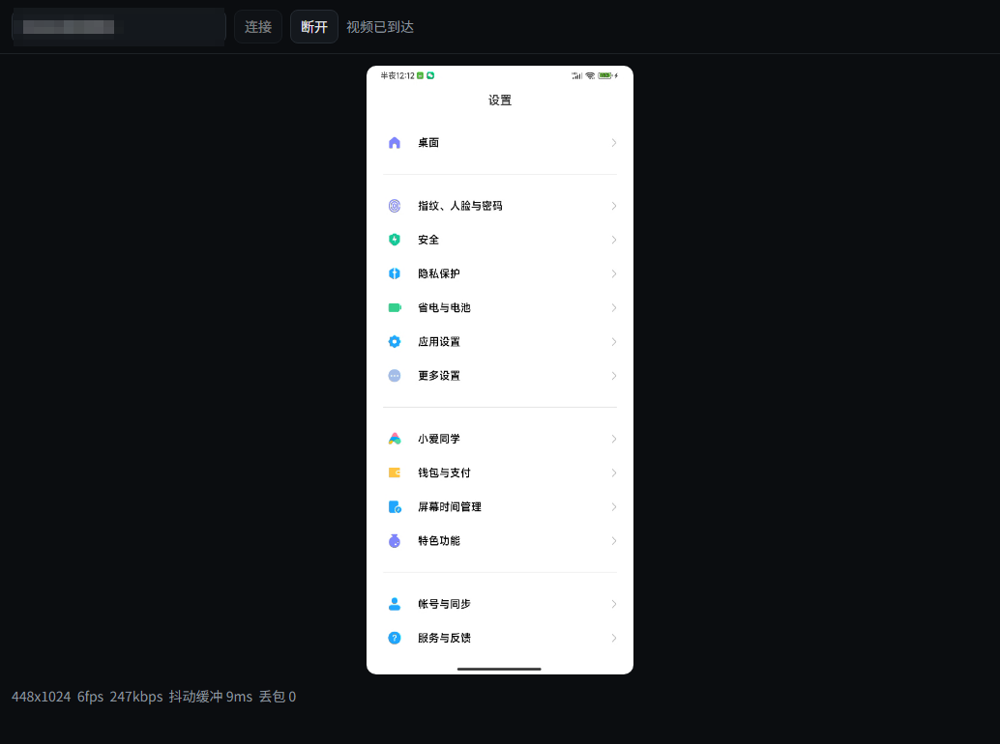
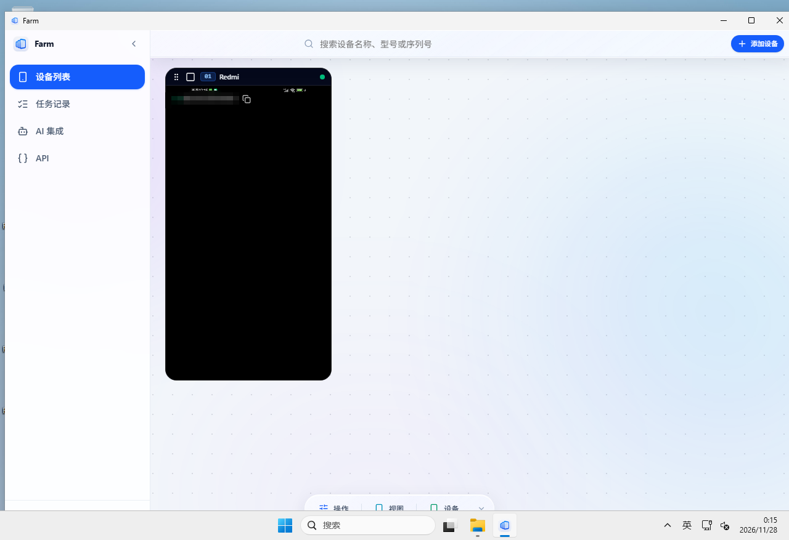

Farm Windows 11 测试报告
2026-11-28 · main 1f6aab8 · 目标机 WIN11TEST（Windows 11 企业版 LTSC 2024 · build 26100 · VMware 虚机）· Edge 158.0.4370.33
issue #5 修复复测通过：Windows 端出画打包路径未含修复（待 beta.2）
安装包v2026.11.25-beta.1farm-windows-gui-amd64.exe · SHA-256 与 Release digest 一致
替换安装桌面 Farm.exe同号包已备份，启动与接口正常
修复验证profile 42e01f设备 SPS 64000a → 归一化声明，sprop 仍用真实参数集
WebRTC 出画448×1024 · 13~16 fps丢包 0 · 抖动缓冲 10~12 ms
结果
| 通过 | Release 包摘要核验与替换安装、桌面端启动、/api/version/health、ADB 设备发现、亮屏与解锁、WS H.264 投屏与设备页渲染、/api/automation/observe、PoC 路由默认 404；修复版服务的 offer SDP profile 归一化、浏览器协商成功（answer m=video 9）、首帧到达、活动画面 13~16 fps 且丢包 0、恢复常规启动后 PoC 回到 404。 |
|---|---|
| 不通过 | 无阻塞项。11-27 的 400 Bad Request + codec is not supported by remote 在本次修复验证中不再出现。 |
| 观察项 | 静态画面（scrcpy 无新帧）时浏览器约每 4 s 发 PLI，服务端翻译成 RESET_VIDEO，统计显示 0 fps / 0 kbps；画面一变化立即恢复。本次未判定为缺陷。 |
| 未复核 | 设备在还原阶段掉线（settings 服务 Broken pipe → adb offline → :5555 拒连，设备仍可 ping），screen_off_timeout（临时 600000）与 stayon 的还原结果未能确认。 |
关键证据
| 设备 SPS | [webrtc] 设备 SPS serial=… profile=64000a sps=19B pps=4B → 浏览器不接受设备 profile 64000a，SDP 声明 42e01f |
|---|---|
| offer SDP | a=fmtp:102 level-asymmetry-allowed=1;packetization-mode=1;profile-level-id=42e01f;sprop-parameter-sets=Z2QACqwbGoHAIGmoCAgIPCIRqA==,aOpDyw==（11-27 为 profile-level-id=64000a） |
| 协商结果 | [webrtc] 协商完成 视频编码=m=video 9 UDP/TLS/RTP/SAVPF 102 a=rtpmap:102 H264/90000、state=connected、首帧 pts=…us（11-27 为 m=video 0 + unable to start track） |
| 浏览器侧 | PoC 页 视频已到达；活动时 448x1024 13~16fps 约2Mbps 抖动缓冲 10~12ms 丢包 0；静态时 0fps 0kbps（无新帧） |
界面与画面证据












结论与后续
- issue #5 的失败场景（High profile 被浏览器拒收）已在 Windows 11 + Edge 158 上修复验证通过，含 Windows 侧 H.264 解码路径。
- 打包路径待补：
v2026.11.25-beta.1内嵌服务早于修复，需发 beta.2 后重跑安装包路径，才能勾选v2026.11.25-feature/tasks.md的 Windows beta 验收项。 - 静态画面 PLI/`RESET_VIDEO` 频次是否需要收敛待确认；设备掉线诱因（可能为
RESET_VIDEO重启编码或温度）未定位。
未覆盖：应用内更新（虚机内更新地址不可达）、beta 服务实例 8081 的通道隔离与通道切换、长时间稳定性、多设备群控；设备侧设置还原结果待设备重新连回后确认。